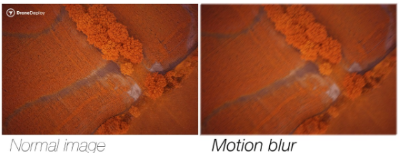

Flight Mission Planning

This module will cover the basics of how to collect drone imagery for photographic mapping purposes. The topics include:
-
Physical camera characteristics
-
Aerial Imagery Scale
-
Principles of Stereo Photography
-
Autonomous Mission Planning
Camera Characteristics¶
Focal Length & Field of View¶
Inside the camera, the Focal Length is the distance from the lens to the sensor plane (usually reported in mm)

The camera field of view (FOV), also called the angle of view, is the extent of the observable world that can be seen at any give moment. FOV is typically reported in degrees and can vary greatly between lens and camera types.
Typically a camera with a longer focal length will have a narrower FOV and a camera with a shorter focal length will have a wider FOV. Drone cameras often have a fairly wide FOV because they are meant
to capture landscapes.
The graphic below shows the relationship between focal length and FOV. Highlighted is the DJI Phantom 4 multi-rotor drone.

Sensor Array¶
Digital cameras have a sensor array of millions of tiny photosites (corresponding to pixels) that are each sensitive to light. The physical size (width and height in mm) as well as
the number of photosites can vary between sensors.
The graphic below shows the sensor array of the Phantom 4 camera. Multiplying the number of photosites (pixels) wide by the number of photosites
high will tell you the total number of photosites for the array. In our example, the camera has 19.9 million pixels, which are also called megapixels.

Aerial Imagery Scale¶
In traditional aerial photography, scale was defined as the ratio of the distance between two points on an image to the actual distance between the same two points on the ground.
Scale was generally reported as 1:25,000 or similar. So if I had a printed aerial photograph and measured the distance between two objects to be 0.25 inches and the scale was 1:25,000,
the real world distance between the objects would be 6250 inches (0.25 x 25,000) or 520.8 feet.
However, with the advent of fully digital aerial photography workflows and the computer screen being the primary tool for viewing imagery, the traditional concept of reporting scale is less useful.
When it comes to drone imagery scale, the two important concepts to understand are image footprint and ground sampling distance.
Image Footprint is the rectangular ground area that is captured by a camera exposure.
Ground Sampling Distance (GSD) is the width of area on the ground that is captured by one pixel. It is also commonly referred to as pixel size or spatial resolution.
For example, a pixel that captures an area of 2 x 2 cm (4 cm2) is said to have a GSD of 2 cm.
As a drone camera gets higher in the sky (further away from the ground), the image footprint and GSD get larger.

We can calculate the image footprint and GSD with simple formulas that include the camera physical characteristics and flying height.
Image Footprint and GSD Calculator
Pix4D has a nice GSD calculator tool to calculate image dimensions and pixel ground sampling distance based on your drone specs

Check out this video which describes how to calculate GSD of aerial images
Stereo Aerial Photography¶
Photographic mapping from drones requires overlapping imagery. That is, as the drone is flying and taking pictures, the image footprints should overlap. Overlap is usually reported as a percentage (%). Forward overlap is the overlap % from successive image footprints. Side overlap is the overlap % from adjacent flight lines.
For robust photogrammetry, it is recommended to have forward overlap of 70%-85% and side overlap of 70%-80%. But these are not hard and fast rules, just recommendations. Optimal overlap will differ depending on the landscape you are imaging and your goal for your imagery products.

Footprint overlap means that any given location on the ground is being imaged from multiple perspectives. In the example graphic below, the shrub is being imaged from 6 different perpective views.
Autonomous Mission Planning¶
The most efficient way to collect overlapping drone imagery of a landscape is to plan and execute an autonomous flight plan. Nearly all modern drones have software applications that empower you program the drone to capture imagery of an area interest - all automatically!
Please check out the following video for an example of autonomous mission planning. All autonomous planning and flying apps will be slightly different from each other, but the basics are generally universal. It can be as simple as tapping a bounding box, selecting a few user parameters, and launching the drone!
Autonomous planning and flying apps generally have a suite of user-defined parameters that enable you to customize your flight. These parameters include:
-
A box or polygon designating the area to be imaged
-
Flying height (m)
-
Ground sampling distance (cm)
-
Forward overlap (%) and side overlap (%)
-
Flying speed (m/s)
-
Gimbal angle
Based on the user-defined parameters, the mapping software will compute the following:
-
Exact flying route including the number and spacing of flight lines
-
Timing between exposures
Calculate Number of Images per Flight Line
Calculate Number of Flight Lines for a Flight Area
Double v Single Grid¶
Double Grid Advantages:
Better photographic coverage leading to better 3D modeling
Double Grid Disadvantages:
Longer flight times; larger datasets that take longer to process
Oblique Imagery¶
Aerial mapping is typically vertical (nadir) but oblique images can also be used in photogrammetry. The addition of oblique images ca improve photogrammetry solutions and improve 3D point clouds at the base of vertical objects
GSD Recommendations¶
Features of interest should drive the optimal GSD; detecting (and 3D modeling) small objects requires finer GSD; Coarser GSD will lead to coarser 3D modeling

Mission planning Tips¶
-
Collect imagery with pre-programmed autonomous flights. Don’t try to collect imagery with manual flying!
-
Make your flight areas into simple polygons like rectangles. Don’t draw complicated flight areas.
-
Make the flight polygon bigger than your area of interest by 10-15%. The periphery of imagery products are often of less quality.
-
Small alterations to flying height and polygon size can make a big difference in how long the total mission takes
-
Always plan flights around quantity and endurance of your flight batteries
Camera Settings¶
Exposure Triangle¶

White Balance¶
White balance: never use automatic white balance! Images will have different hues. Set camera to 'sunny' or 'cloudy'